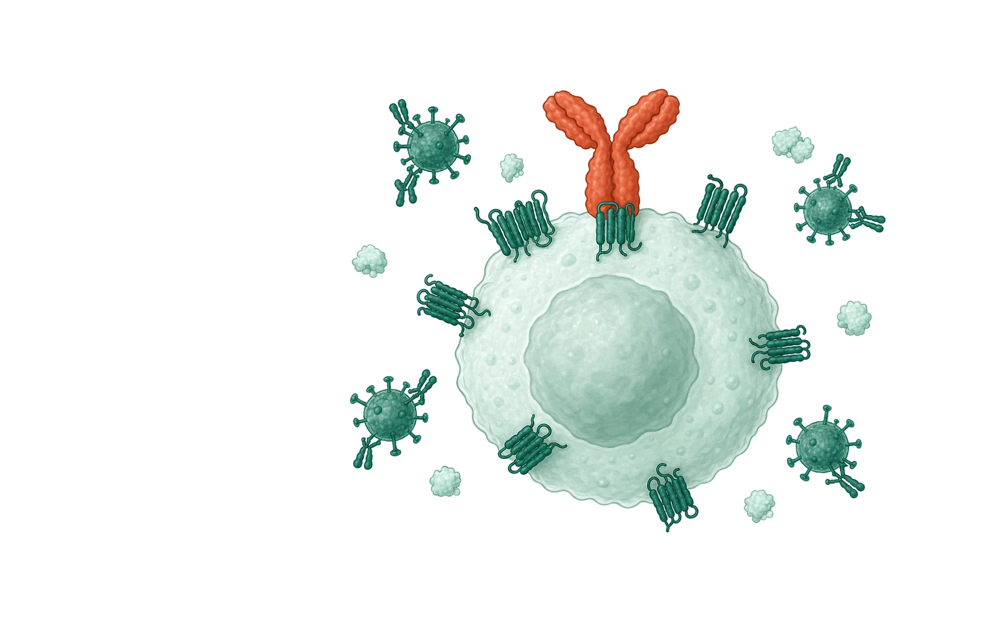
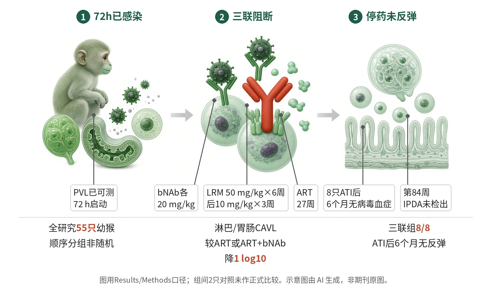

封面示意：淡绿CD4 T细胞上，赤陶红抗体封住CCR5受体。图片由 AI 生成，非原文图片。
口服SHIV感染幼猴在72小时启动LRM、bNAb和27周ART后，8只ATI后6个月均无病毒血症且PBMC/组织未检出CAVL。

- 72 h确认病毒血症可测
- 三联阻断进入与复制
- 27周后洗脱并ATI
- 6个月无反弹
- 第84周未检出前病毒
图示72 h后口服SHIV幼猴已可测病毒血症，三联方案同时用bNAb、ART和LRM阻断复制与CCR5进入；随后ATI、CD8耗竭和第84周组织检测均未见可测病毒。示意图由 AI 生成，依据原文结果绘制，非期刊原图，不代表分子比例
研究背景与待解问题
儿童围产期获得HIV后，即使ART可长期抑制复制，潜伏储存库仍难以清除；未治疗儿童在1岁内死亡率可达50%。既有资料显示，幼猴在口服SIV或SHIV后病毒很快播散，ART若从72 h才开始，往往仍会在停药后反弹。
bNAb可中和Env并短期压低病毒血症，CCR5抗体LRM可阻断主要共受体；但单一策略在储存库已建立后难以清除病毒。Sacha等在Nature Microbiology把问题前移到暴露后72 h，测试中和、复制抑制和CCR5阻断能否共同减少新感染灶播散。
研究设计
研究共纳入55只约4周龄雌雄幼年恒河猴，每组6–8只，经高剂量SHIV SF162P3单日口服感染。治疗多在72 h开始，此时血浆病毒血症已可测。动物按出生日期顺序分组而非随机；病理和病毒定量实验使用编码样本盲法完成。
三联组在72 h启动LRM、bNAb和ART：LRM 50 mg/kg每周6周后10 mg/kg每周3周，PGT121与VRC07-523LS各20 mg/kg一次，TDF/FTC/DTG每日ART 27周；确认bNAb、LRM和CCR5占位洗脱后ATI。主要感染读出为PVL和PBMC CAVL，样本量按80%把握度、alpha=0.05估算用于检测PVL差异；未排除数据，并纵向监测病毒读出。
核心结果
窗口先被限定
48 h一次bNAb使5/6幼猴清除病毒；推迟到72 h后，bNAb单用6只均反弹，其中4只在第5–6周、2只在第16和22周。72 h启动21天ART或ART+bNAb仅各有2/6低于检测限，说明72 h时单靠中和或短程ART不足。
CCR5阻断减播散
LRM单药每周28周把稳态血浆病毒降低2–4 log10，治疗末3/6不可测，但6只PBMC仍有细胞相关病毒。LRM加27周ART也未阻止感染：ART停后4/6反弹，其中3只血浆和PBMC病毒延迟9–10周。
组织储存库减少
尸检组织显示，LRM使淋巴组织CAVL较ART或ART+bNAb降低1 log10；在胃肠组织中，LRM单用或合并ART也降低1 log10。图注说明这些组织比较用two-way ANOVA和Tukey多重比较，显著性以P<0.05至P<0.0001标注。
三联后未反弹
所有8只三联治疗幼猴在ATI后6个月仍无病毒血症，且任何动物PBMC或组织未检出CAVL。同一实验的2只未治疗对照病毒血症失控，1只在第20周因AIDS相关疾病安乐死；2只ART+bNAb对照在ATI后反弹，峰值为10^5或10^6 copies/ml，并出现Gag特异性CD8 T细胞和抗Env抗体，三联组均无。
潜伏病毒未检出
第56周，8只三联治疗幼猴未见Gag特异性CD8 T细胞，也无抗Env抗体；第61周CD8细胞耗竭后，8只三联治疗幼猴仍未出现血浆病毒或细胞相关DNA反弹，而存活对照和2只ART+bNAb动物出现病毒血症和可检CAVL。第84周尸检时，8只三联治疗动物没有任何样本病毒核酸阳性，淋巴组织CD4+T细胞IPDA也未检出完整或缺陷前病毒，而对照和ART+bNAb动物有病毒DNA。
机制解读
原文实验证明：实验证明的链条是：72 h时血浆病毒已可测，单用bNAb、ART或LRM不能清除全部感染；LRM可在血液CD4+T细胞上维持CCR5受体占位，并把淋巴和胃肠组织CAVL降低1 log10。加入bNAb和27周ART后，8只动物ATI、CD8耗竭和第84周尸检均未检出复制或潜伏病毒。
免疫学读出支持“不是由可测适应性抗病毒免疫维持控制”。第56周，对照和2只ART+bNAb动物可测Gag特异性CD8 T细胞，2只ART+bNAb动物还有抗Env抗体；8只三联治疗动物这些应答均未观察到，CD8耗竭也未诱发反弹。
作者推测：作者推测，三联作用可能来自多层阻断：bNAb中和Env，ART压制复制，LRM阻断CCR5进入并可能改变CCR5+CD4+T细胞向胃肠组织迁移。但原文明确称LRM与bNAb协同机制未知，也没有直接证据证明bNAb介导清除已感染细胞。
局限与不确定
- 72 h干预仍在峰值病毒血症前，是作者点名的局限；这接近暴露后极早治疗，而不是已确诊多日或成人慢性感染。
- 三联实验的比较组很小：三联组n=8，只有2只未治疗和2只ART+bNAb同期比较动物。研究未随机分组，而是按出生日期顺序分配；虽然病毒定量和病理使用盲法，组间结论不应读作大样本疗效比较。
- 作者承认，若更深取样骨髓或中枢神经系统等非淋巴组织，仍可能发现潜伏病毒；研究重点取样淋巴组织、PBMC、胃肠组织和脾。第84周无检出不能等同于证明全身每个解剖位点绝对无病毒。
- 机制仍未闭合：CCR5阻断若主要依赖共受体封锁，可能不适用于使用CXCR4的传播病毒；LRM与bNAb协同机制未知，成人HIV感染中的有效性也未检验。
临床/产业意义
若这一幼猴模型能预测人类围产期感染，72 h内把bNAb、ART和CCR5阻断合用，可能把治疗目标从长期抑制推进到阻止永久储存库成熟。其转化吸引力在于LRM、VRC07-523LS和PGT121均为人用抗体或临床研究相关产品。
但产业和临床推进应以早期暴露识别、可及给药和病毒嗜性为前提。该研究支持设计新生儿暴露后强化方案，不能解读为儿童HIV已可治愈；下一步关键是验证不同暴露剂量、启动时间和CXCR4相关风险。